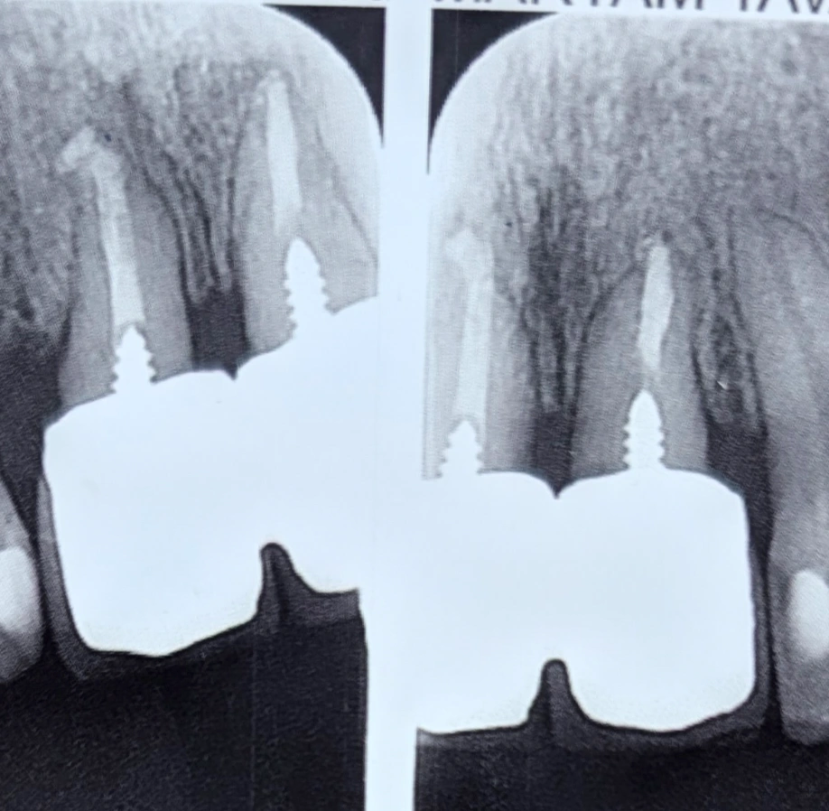
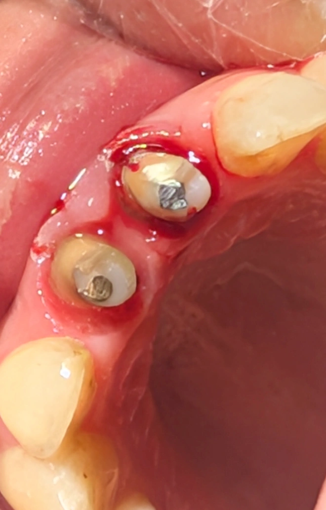

Insight 55 — اسپیلینت کردن پروتزی؛ مدیریت بایومکانیک دندانهای با ریشهی کوتاه
تاریخ انتشار:
آخرین بازبینی:
English

توضیح بالینی
وقتی ریشهی دو دندانِ قدامی بهشدت کوتاه است و هرکدام بهتنهایی توانِ تحملِ نیروهای فانکشنال در درازمدت را ندارد، استراتژیِ بایومکانیکِ درمان میتواند اتصالِ (اسپلینتِ) روکشهای آنها به یکدیگر باشد — به شرطی که دندانهای پایه از نظرِ قدرت و وضعیتِ ریشه، متناسب و در یک سطح باشند
-
شرح کیس و چالش اولیه
بیمار با دو روکش بسیار بلند در ناحیهی دندانهای قدامی مراجعه کرد که از نظر نسبتهای زیبایی، ظاهر ناخوشایند و غیرطبیعی داشتند. دندانها قبلاً جراحی افزایش طول تاج شده بودند، اما بیمار همچنان از فرم، حجم پالاتال و ظاهر روکشها شدیداً ناراضی بود.
چالش اصلی این کیس، کوتاهی شدید ریشهی هر دو دندان بود که آنها را در مرز کشیده شدن قرار میداد. -
قدم اول: ارزیابی اولیه و مدیریت انتظار بیمار
در ابتدا سعی شد با رویکردی محافظهکارانه و بدون تعویض روکشها، حجم بیش از حدِ سینگولوم در سطح پالاتال اصلاح و کم شود تا میزان آزردگی بیمار کاهش یابد.
در این مرحله به بیمار توضیح داده شد که به دلیل کوتاهی شدید ریشهها، ریسک از دست رفتن این دندانها در حین هرگونه مداخلهای بسیار بالاست. با این حال، به دلیل عدم تحمل فرم روکشهای قبلی، بیمار خواستار تعویض آنها شد و ریسکهای درمان را پذیرفت. -
قدم دوم: برداشتن روکشها و اصلاح تراش (Re-preparation)
پس از بریدن روکشهای قبلی مشخص شد که تراشِ پالاتال بسیار نامناسب و غیراصولی انجام شده و علت اصلی عدم تحمل بیمار، همین حجم و کانتور غلط بوده است.
در این مرحله، اصلاح تراش (Re-prep) با کانتور اصولی پالاتال و رعایت ملاحظات ساختاری انجام شد. -
قدم سوم: طرح درمان نهایی و استراتژی بایومکانیک
با توجه به اینکه ریشهها بسیار کوتاه بودند، این دندانها به تنهایی توانایی کافی برای تحمل نیروهای فانکشنال در درازمدت را نداشتند. در این شرایط، استراتژی بایومکانیک ما اتصال روکشها به یکدیگر (Splinting) بود تا به هم کمک کنند و طول عمر دندانها افزایش یابد.
از آنجا که هر دو دندان از نظر میزان تحلیل ریشه و قدرت در یک سطح بودند، این تصمیم اتخاذ شد. -
قدم چهارم: فاز موقت و مانیتورینگ
یک پروتز موقتِ متصلبههم (Splinted Temporary) تحویل بیمار شد و دندانها به مدت ۲ الی ۳ هفته تحت مانیتورینگ قرار گرفتند تا فرم، فونتیک، کانتور پالاتال و رضایت بیمار از ساختار جدید بررسی شود.
پس از تایید نهایی این فاز، دو روکش دائم متصلبههم ساخته و تحویل خواهد شد. -
پیام کلیدی کیس
گاهی برای بهبود شرایط بایومکانیک مجبوریم روکشهای دندان را به هم اسپیلنت کنیم؛ اما شرطِ حیاتی این کار آن است که دندانهای پایه از نظر قدرت، توانایی و وضعیت ریشه، متناسب و در یک سطح با یکدیگر باشند.

محتوای این صفحه برای استفادهٔ آموزشی دندانپزشکان و دانشجویان دندانپزشکی تهیه شده است.